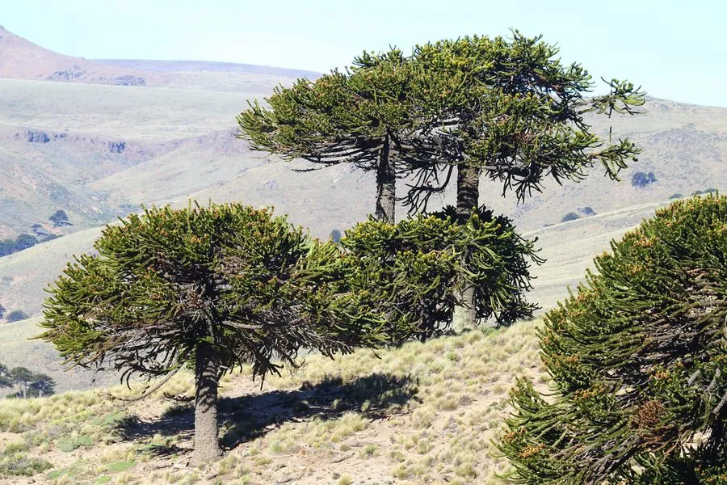

乔木 · 植物界
智利南洋杉 Araucaria araucana

原产智利与阿根廷的古老针叶树，叶片坚硬如刺、球果硕大，种子可食，是安第斯山区的“活化石”。
- 分类
- 门裸子植物门纲松柏纲目松柏目科南洋杉科属南洋杉属
- 栖息环境
- 海拔 600–1800 米的安第斯山区，喜凉爽湿润、光照充足
- 地理分布
- 原产智利中部与阿根廷西部，世界多地植物园引种栽培
- 保护级别
- IUCN 濒危（EN）；智利、阿根廷受法律保护
物种志
智利南洋杉为常绿针叶乔木，高可达 50 m，树皮灰褐色、呈龟甲状开裂；树干通直，枝条轮生、平展，老树的枝叶集中在枝端。叶片革质、三角形，先端尖锐如刺，紧密排列在枝条上；雌雄异株，球果大、近球形，直径可达 20 cm，成熟时褐色，种子长卵形、可食。
智利南洋杉原产智利中部与阿根廷西部的安第斯山区，喜凉爽湿润、光照充足，适宜火山灰土壤，生长缓慢，寿命可达千年以上，是古老的孑遗植物。种子富含淀粉，是当地原住民的传统食物；木材可供建筑用；树形奇特、叶片坚硬，是著名的观赏树种，被广泛引种到欧美植物园。由于分布区狭窄、结实率低，智利南洋杉被列为濒危物种，受到保护。
形态与习性
- 株高可达 50 m，树皮龟甲状开裂
- 叶片三角形，坚硬如刺
- 花期春季，雌雄异株
- 球果近球形，直径可达 20 cm
- 土壤火山灰土壤，排水良好
- 主要用途种子可食、园林观赏、建筑用材
趣味知识
- 智利南洋杉的叶片坚硬如刺，动物难以啃食，因此被称为“猴谜树”。
- 智利南洋杉寿命可达千年以上，是古老的孑遗植物。
- 智利南洋杉的种子富含淀粉，是当地原住民的传统食物。